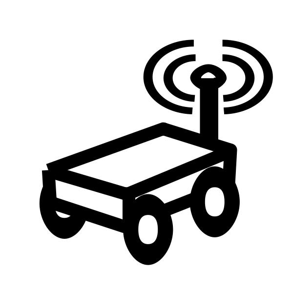

Bringing mobility in your experiment
The IoT-LAB provides robots to reach application scenario involving mobility

| Grenoble | Lille | Strasbourg | Paris | Total | |
| Planned | 8 | 64 | 45 | 10 | 127 |
| In production | 2 | 3 | 10 | 0 | 15 |
IoT applications involve mobile entities with either controlled or uncontrolled mobility. Uncontrolled mobility can be either predicable or non-predictable.
So, we plan to offer to the user 3 different types of interaction with the robots.
Flexible Types of Mobility

Circuit
Available
The fixed circuit-based mobility offered in the IoT-LAB today falls under the “predictable uncontrolled mobility” class. This is representative of applications such an IoT devices embedded in a bus following a pre-determined route.
Mobility Model
Work In Progress
- random waypoint mobility: the robot repeatedly selects a random destination inside the testbed and navigates to it;
- Manhattan mobility: the robot moves along (virtual) horizontal and vertical lines, and select it heading randomly (continue straight, turn left/right) at each intersection. This mobility pattern is representative of some urban areas.
User Controlled Mobility
Work In Progress
In applications such as a swarm or robots of a fleet of self-driving cars, the mobility is controlled. To reproduce such scenarios, user controlled mobility is being implemented. In the same way as firmware is deployed on sensor nodes, the user will be able to uplad a mobility model. To guarantee the integrity of the software running on the robot, the user’s mobility model will execute in a sandbox environment.
Learn how to use mobile nodes. Follow the tutorial
Robots deployed
{kind=link}
Turtlebot2
is an open-source robot with a maximum speed of 0.7m/s and an odometry of 2578.33 ticks/wheel. It is equipped with a netbook (Asus X200CA). Two sets of batteries are present in this robot: a 3000mAh battery for the netbook, and a 4400mAh battery to power the motors. This allows the robot to run for 3 hours, and fully recharge in 6 hours. An infrared beam allows the robot to find its docking station, where it recharges.
{kind=link}
Wifibot
is a high-mobility 4×4 platform with 4 brushless motors and 4 hall encoders. It is equipped with a single-board computer based on an Intel Atom dual-core. Since no off-the-shelf docking station is available for this robot, the IoT-LAB team developed one capable of charging robots. The robot uses its two infrared sensors and camera to align in front of the docking station, marked by a QR code, moves forwards, and shuts down its motors once it starts charging.